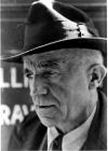

"The biggest challenge of the day is: how to bring about a revolution of the heart, a revolution that has to start with each one of us."
Dorothy Day
"...why the things are what they are, how the things would be if they were as they should be, and how a path can be made from the things as they are to the things as they should be."
Peter Maurin
Volunteers Needed
Be a part of Church history!
Help canonize Dorothy Day!
Click here for details.
Support Dorothy's Cause for Sainthood
Click here for details.On May 1, 1933, in the depths of the Great Depression, The Catholic Worker newspaper made its debut with a first issue of twenty-five hundred copies. Dorothy Day and a few others hawked the paper in Union Square for a penny a copy (still the price) to passersby.
Today 203 Catholic Worker communities remain committed to nonviolence, voluntary poverty, prayer, and hospitality for the homeless, exiled, hungry, and forsaken. Catholic Workers continue to protest injustice, war, racism, and violence of all forms.
Explore the life and writings of Dorothy Day and Peter Maurin.
Discover what Catholic Worker communities worldwide are doing today to fulfill Dorothy and Peter's vision. It is a fascinating story.
| This site is the collaborative effort of many people affiliated with the Catholic Worker Movement: workers, scholars, archivists, writers, editors and programmers. Your comments and suggestions are most welcome. |